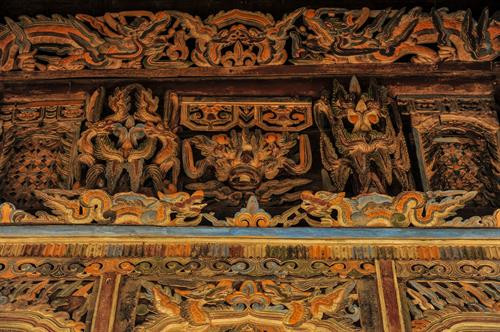
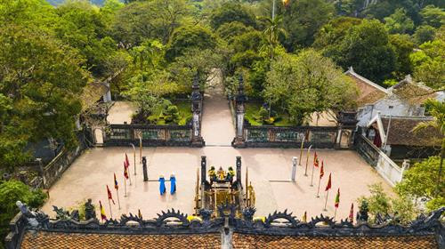
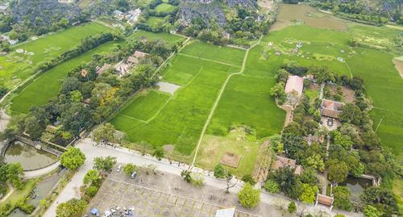

Đền vua Đinh, vua Lê là hai quần thể di tích lịch sử quan trọng thuộc Cố đô Hoa Lư, nằm tại xã Trường Yên, huyện Hoa Lư, Ninh Bình. Cả hai đền đều được xây dựng từ thời nhà Lý, sau đó được tu bổ vào thế kỷ XVII dưới triều Hậu Lê và giữ được nhiều nét kiến trúc cổ kính, tinh xảo. Đền thờ các vị vua có công lớn trong việc thống nhất đất nước và xây dựng nên kinh đô đầu tiên của Việt Nam, thu hút du khách và là một phần không thể thiếu trong khu di tích quốc gia

2. Đền vua đinh, vua lê ở đâu?
Đền vua Đinh và đền vua Lê nằm trong khu di tích cố đô Hoa Lư, thuộc xã Trường Yên, huyện Hoa Lư, tỉnh Ninh Bình. Đền vua Lê cách đền vua Đinh khoảng 300m về phía bắc và là một quần thể di tích lịch sử quan trọng, thu hút du khách đến tham quan

3. Giới thiệu về khu du lịch sinh thái Tràng An Ninh Bình
Khu du lịch sinh thái Tràng An nằm ở tỉnh Ninh Bình, là một phần của Quần thể danh thắng Tràng An được UNESCO công nhận là Di sản Văn hóa và Thiên nhiên Thế giới. Nơi đây nổi tiếng với hệ thống hang động đá vôi, sông suối và núi non hùng vĩ, được ví như “Hạ Long trên cạn”
Du khách đến Tràng An có thể ngồi thuyền tham quan qua các hang động kỳ ảo, ngắm nhìn cảnh quan thiên nhiên xanh mát và ghé thăm những điểm tâm linh nổi tiếng như Đền Trình, Đền Trần, Phủ Khống

Không chỉ có giá trị về cảnh quan thiên nhiên, Tràng An còn là nơi lưu giữ nhiều di tích lịch sử, khảo cổ học gắn liền với nền văn minh cổ xưa. Đây là điểm đến hấp dẫn, kết hợp giữa du lịch sinh thái, tâm linh và văn hóa đặc sắc của Việt Nam.